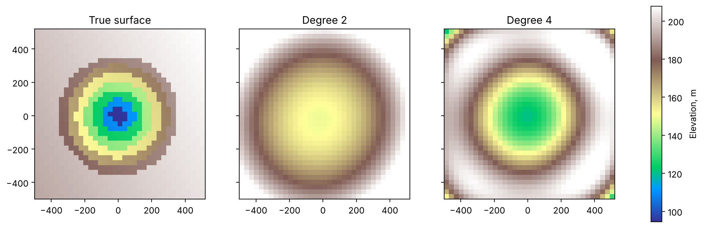

Polynomial surface and adequacy
Reproduces the polynomial-model study of Zelensky and Donchenko (2025) on the synthetic pit: one least-squares surface per degree, each judged by the paper’s indicators. Notebook: notebooks/02_polynomial_surface.ipynb, or run it directly:
from pitmap import PolynomialSurface, select_degree
from pitmap.synthetic import grid, sample_survey_points, true_surface
xy, z = sample_survey_points(n=400, seed=0)
ax_x, ax_y, nodes = grid(step=30.0)
fits = {d: PolynomialSurface(degree=d).fit(xy, z) for d in range(6)}
Degree sweep
RMSE is against the true surface at the grid nodes. The other columns use the survey points only, which is all a surveyor would have.
Degree |
R2 |
Variance ratio, % |
Adequate |
RMSE, m |
|---|---|---|---|---|
0 |
0.000 |
100.0 |
no |
26.23 |
1 |
0.027 |
97.3 |
no |
25.94 |
2 |
0.623 |
37.7 |
no |
17.34 |
3 |
0.624 |
37.6 |
no |
17.35 |
4 |
0.926 |
7.4 |
yes |
9.55 |
5 |
0.926 |
7.4 |
yes |
9.48 |
select_degree returns degree 4, the lowest that passes both thresholds,
and the RMSE column agrees. Degree 2 clears the R2 bar at 0.62 but is
rejected on the variance ratio: the surface is far flatter than the data.
The lag-1 autocorrelation of the input is near zero here because the survey points are in random order; it is a property of the sequence, not of the fit.
Surfaces


A global polynomial cannot reproduce the benches, so even the adequate fit is far rougher than sector IDW (RMSE 9.5 m against 3.9 m). That is the expected trade: the polynomial is a smooth trend surface, which is what the 2025 paper uses it for, while the local interpolators follow the detail.
Reference
Zelensky, O., and Donchenko, O. (2025). Mining Journal of Kryvyi Rih National University, 59(1), 10-21. https://doi.org/10.31721/2306-5435-2025-1-10-21